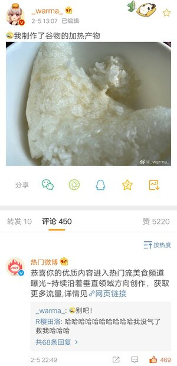

Page6-相关梗
目录
- 人物介绍
- 杂谈
- 相关人物
- 视频作品
- 非视频作品
- 相关梗
- 其他有趣内容
本人梗
- 自搜：Warma经常在B站以及各大平台搜索自己，对搜索自己的二次创作的热情极高且手速很快，被粉丝调侃是“爱自搜的女人”。
- 长沙口音：Warma自称普通话很标准但是经常不经意露出自己的长沙口音，口音特点为“尾音上↗扬↗”。
塑料普通话。
-
Nia：Warma的口头禅，源自长沙的方言，语气较轻时有感慨、震惊、不敢相信之意。例：“Nia这个关卡也太难了！”。
但应当注意的是，此处“Nia”与脏话“嬲”是有区别的，前者并无脏话之意。
- lei：意为“来”，微微自带挑衅语气。例：“lei～啊，lei打我啊～”
- 汪涵：Warma早期欢呼时发出“waha！”的欢呼声因听似“汪涵”而被称作喊汪涵。
- 鸡：Warma对鸡（尤其是母鸡）有着迷之执着，自称因为母鸡又圆又好吃而最喜欢母鸡。
Warma的好朋友
- Warma曾因为喜欢鸡而制作了游戏《良》。
-
好朋友：Warma经常亲切地称被自己端上餐桌的鸡为“好朋友”。相对应的，鸡蛋成了“好朋友之子”。
看着好朋友，Warma的泪水
从嘴角流了出来。
- 像鸡一样安静：Warma的神奇比喻。
众所周知鸡是一种很安静的生物。
-
蜘蛛：Warma 最害怕的东西，看到之后甚至会被吓出电音啊↑啊↗啊→啊↘啊↓啊↓啊↓啊↓
[1]
，但Warma画的蜘蛛却很可爱。由于第八期爆炸电台，又有“多倍体蜘蛛”的梗。此外，“有蜘蛛”有时会被有意无意地打成“有只猪”。
作品梗
- 儿童鞋垫：因Warma画的儿童画看了令人印象深刻，而被观众戏称为“儿童鞋垫”。
值得一提的是此处与“儿童邪典”无关系
，因为内容不是儿童向的，而是老少皆宜。老 少 皆 噫
一些例子
-
闭眼画画：Warma在一期画画视频中挑战闭着眼睛画画，因画的内容过于令人印象深刻，之后每次Warma闭眼画画便有弹幕刷“危”
[2]。
- 长颈鹿：Warma在一期画画视频中画的猎奇生物，因突然奔跑起来的鬼畜动作加上满脸高兴的笑容而让人印象深刻。
- 皮卡丘：Warma在绘画视频中多次画皮卡丘，但最后画出来的皮卡丘都有着诡异气息，以至于每次Warma准备画皮卡丘时大家都会有不好的预感。
- 独角兽、玛蚁、小红、章鱼花、四脚鸡、拐棍鸵鸟、三角猫、沃玛菇（沃玛宇宙里少有的正常画风生物，而且好吃！）等。也许你看到这些字就可以脑补出一张张世界名画～
-
BOOM!：爆炸电台”系列的经典开场词。爆炸电台是半年一更的电台节目，内容多为回答观众提问与杂谈。
然而第九期和第十期之间间隔了1年零34天。
-
土拔鼠：Warma曾做过两个土拨鼠相关配音视频
Warma金牌解说土拨鼠摔跤 ⇗
与
世界上叫声最可爱的土拨鼠⇗
一定要录出可爱的风格！，因其魔性与莫名喜感深受喜爱。
-
啊XXX
(鸡蛋酱)好厉害～！XXX（蒸Warma）真↗好吃！：出自Warma填词翻唱作品
“不管谁说话都在听着的Warma”⇗
。
- 啊哈：Warma最喜欢的表情。此外有Warma版的啊哈。Warma曾发微博称发多了Warma版本的“啊哈”之后，突然发原版“啊哈”反而被问“你怎么秃了”。
-
人类资格证：自称考不到人类资格证，人类资格证每年都有考试但是不知为何总是过不了。
另外Warma在初中的日记中写到梦想是
超越人类。
沃玛！我不做人啦！
-
灭火器：Warma的一系列吹竖笛视频，因画面中是Warma抱着灭火器在吹，
且竖笛吹得呕哑嘲哳
（好tin的音le）而被称作“吹灭火器”，如听仙乐耳暂鸣，Warma倾向于将其看作实验音乐。
其实一开始“灭人器”的说法还不太流行，但随着灭火器不断更新，这一称法逐渐就流行了起来，直至Warma自己也开始用来调侃。
快进到Warma出一首Neurofunk
-
你也要过饭：Warma在bilibili的2020年拜年祭单品
《诸神的奥运》⇗
中对虚拟主播谢拉说的一句台词。
- 沃沃头：出自第七期爆炸电台Warma唱的一段歌：“手里捧着窝窝头……菜里没有一滴油……”。此外，2019年12月27日的闲聊直播中，Warma画的背景图有两个“沃沃头”叠在一起。
-
厨艺：Warma厨艺较差，常加入过 量调味剂，
曾有粉丝劝Warma为了健康考虑
毕竟她先前吃自己做的红烧鸡翅吃坏过肚子，不要吃自己做的饭。
Warma在2020年2月17日和2月21日的微博中分别展示了自己做的咖喱饭和排骨玉米汤，
并在评论区分别做出了“好吃！”和“看上去好喝，其实味道淡如水……”的评价，并在之后屡屡发出看起来十分美味的菜品图，但粉丝们仍不会就此安心让Warma进厨房。
相关梗
- 生理糖水：Warma在一期动物森友会实况视频的开头制作的补充能量的液体（水+过量的盐+补救的糖）
喝了一口因为太难喝放到一边了
- 煮锅盖：Warma在一期做饭的视频中，想焖煮鸡腿但是却没有合尺寸的锅盖，强行将小锅盖放在大锅里煮。
“锅盖比汤x......锅盖比锅小！”
-
蛇草水，阿帕茶……：一些一言难尽的不可食配料。
蛇草水，阿帕茶，典明粥，昏睡红茶，香菜粉，芹菜梗，鲱鱼罐头，石楠花，仰望星空……。
出自【中文配音】pop子和pipi美的日常【第二期】⇗。
-
扫雷：Warma在
第一个实况的游戏视频 ⇗
中说“录到我炸死为止”后便轻松踩雷引爆游戏，
此后Warma每次扫雷总是遇到开局即踩雷的厄运。如
2019年12月27日闲聊直播 ⇗中12:40到15:20的满分节目效果。
- 忆雨：是Warma初中时期的笔名，因为在写恐怖小说时，看见屋外正在下雨。在第四、八期爆炸电台与《实验楼》实况中Warma对忆雨有做较详细的介绍。
忆雨相关
-
死亡圣诞/实验楼：《死亡圣诞》是忆雨写的恐怖小说，
爆炸电台第四期 ⇗中有提及小说的部分内容
：圣诞节，我们死了。可惜具体文本现已不可考。
《实验楼》是同时期Warma用ppt做的文字冒险游戏（Warma有实况过这个游戏）
- 我恨人类：初中的Warma在日记中写下“我恨人类”，这句话被认作是忆雨对人类的态度。忆雨曾回答过如何写一个精彩的小说
：“把人类写死就行了”。
- 眼珠：忆雨老师在刻画恐怖场面时对眼珠格外热衷，被认为“跟眼珠子有仇”。
-
我已经完全爱上Warma了！：出自《【Warma】我喜欢爱酱！！（绊爱面试）》⇗
视频结尾，Warma说“我已经完全爱上爱酱了！”，于是便出现了“我已经完全爱上Warma了！”这样的应援词。
- 缓存：Warma经常在视频投稿的缓存文件标题藏彩蛋。
-
啧：“史悲的游戏只要啧得够多，就能通关。”Warma如是说。
见【Warma】一开场就死的马里奥游戏⇗
的2:40后。史悲在评论区啧了一声，转眼间被置顶处刑，疑惑地打出“？”。
-
好宅哦，我都不看这些的!：是
《【Warma】我从消沉中走出来了【杂谈】》⇗
中的一句台词，在对话中使用有着突然高维打击的神奇效果。
你好宅哦，我都不看沃玛的。
- 您好，欢迎光临，点（买）！：Warma的自制小动画中的角色店员常见的开场白，因其唐突直接的欢迎语句令人印象深刻。
-
家族企业：指沃尔玛超市。“沃玛”与“沃尔玛”的梗由来很久，“家族企业”这一称呼正式出现在
《【Warma】我从消沉中走出来了【杂谈】》。⇗
- Warma的鞋：大小为1.1819万平方公里。
“因为整个长沙都是我的鞋——”
-
割一心埋于浅岛：出自爆炸电台第八期，源自Warma的梦。
在梦里这是一首古代大诗人含恨而死的遗作，一首背不下来的诗，
传说中背下来会当场暴毙，Warma只记得“割一心埋于浅岛，离二肺埋于......诏至天下”。
-
七天七人七石像：出自爆炸电台第八期，Warma的梦。
Warma在梦中和六个同学荒岛探险，发现每个人都有自己对应的死法的雕像。
经历了一段惊心动魄的旅程之后，最后当大家聚集在一起的时候发现有个人失踪了，核对名单，
发现失踪的居然是......某知名歌手
米津玄师？！然后Warma就醒了。
-
W.C：因为Warma经常与Crazy Bucket（即CB）合作，于是被粉丝戏称为“W.C组合”、“玛桶组合”。CB与Warma的知名正式合作歌曲有《我家里有蜘蛛！！》、《I really ∞》、《温软宇宙》等。
直播梗
-
雪人：Warma在2019年12月27日的直播中以一副雪人的画为背景，弹幕提到背景的雪人好看时，
Warma回应“雪人在哪”，自称看不见雪人（雪人最初来源的直播精剪）
This ⇗[失效链接]，
后在视频
《【Warma】我从消沉中走出来了【杂谈】》⇗
中再次出现雪人，会出现在Warma身后，Warma回头却又自动消失，偷偷接近Warma并往Warma眼前放蜘蛛，
其实吧……你看看你背后。
-
讲生物课本：Warma曾在早期直播（2016年8月17日）
给大家讲人教版高中生物必修一 ⇗。
微博梗
-
长沙一：有个日本的游戏公司叫“日本一”，Warma按照这个起名方式给自己起了个代号：长沙一 ，意指自己是长沙第一酷的人。
-
沃玛bot：Warma做的个QQ自动回复机器人，因气人的回复设定甚至气倒了Warma自己，经常会回复“不准”“我觉得不行”来怼人。
时 刻 警 惕 人 工 智 能
-
做梦：在Warma的微博中经常看到她更新自己做的各种各样的梦，有时因做梦频率过高而被戏称为“做梦博主”。
-
沃草：Warma于2020年2月29日起将一条微博置顶
[3]
，利用编辑功能进行云养草。
这颗草每隔一段时间都会变化，被粉丝称作“沃草”。最后停更，停更时是“沃树”，
因为Warma编不下去了。
-
谷物的加热产物：Warma在2020年2月5日下午在微博里发出一张煮饭煮成锅巴的图，并将介绍中的“我煮了米饭”改为“我制作了谷物的加热产物”。
- 当晚评论中出现一条“热门微博：恭喜你的优质内容进入热门流美食频道曝光~持续沿着垂直领域方向创作，获取更多流量,详情见……”，导致粉丝集体笑没气。
-
清淡/不辣：Warma超爱吃辣，但也常因此坏了嗓子。然而和迅哥儿一样，Warma已经嗜辣成性了，即使是“不辣”的菜也常见到辣椒。
-
我是只鸡：Warma管理QQ的小号曾收到一条“你好Warma，我可以加你QQ吗？我是只鸡。”的邮件。
极限一换一
-
中国消防：Warma在2019年7月10日发了一条“锅烧起来了”的微博，被中国消防转发，
还写了一首打油诗：“沃玛不光厨艺通，遇火还会锅盖封。煎炒烹炸易生事，劝君常念防火经！[微笑]”
沃玛对此表示非常惊喜
-
沃牛：指Warma在与b站up主怒九笑同居后，把本来准备用来装饰怒九房间的挂布画披在身上，并在怒九的房间里蠕动的行为。怒九曾录制了多个视频记录下了沃玛的这一特殊生命形态。

其他梗
- Warma养鸽场：Warma在B站上传直播录像的小号。因为账号是Warma本人管理，所以有时在这个小号里能见到不寻常的特殊内容。
还有忆雨的正常画。
-
输入法烫手：评论区时常出现粉丝误将“沃玛”打成“我妈”，便被调侃是“输入法烫手”。
类似谐音梗常见的还有“沃的玛呀”
[4]
、“沃的玛雅电台”（指玛德琳娜电塔）。
-
你为什么不说话：Warma在粉丝群里发的一句话，配图为《君は薔薇より美しい》翻唱的曲绘。
由于某些原因，Warma的官方通知群都是禁言的，于是沃玛有时会在群里发一些这样调皮的话，也常有粉丝通过反复横跳修改昵称的方式进出群来回复。
现因warma全部粉丝群禁止加入而失效。
有些粉丝出来，就再也回不去了...(悲伤的故事)
本页注释
1.↑
吓出电音：
《我家里有蜘蛛》⇗
2.↑
闭眼画画：
《【Warma】请在父母陪同下观看的绘画视频》
⇗
3.↑
这是一颗苗苗，过一阵子再来看它说不定会有什么变化？
4.↑
在老番茄的“史上最憨训练师”中沃玛配音的部分可能会出现